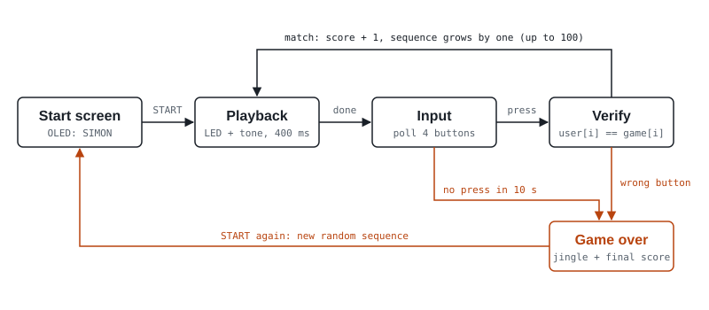

Work / Simon game
Simon memory game
A working clone of the Simon memory game on an Arduino, with lights, tones, five buttons and an OLED score screen. It passed its final demo.
Hardware, then firmware
12 signal lines, one board
Each color has a pair of LEDs wired in parallel, giving 8 LEDs on 4 output pins. The four color buttons and a START button use the Arduino's internal pull-ups, so no external resistors were needed. A speaker plays each color's tone, and the OLED shares the I2C bus on two more lines. I wired all of it. A teammate designed a 3D-printed case; the buttons, LEDs and OLED mount in its lid, but the case was too small to hold the board and wiring, so the electronics never fit inside it.
- Buttons
- Red D13 · Green D12 · Yellow D11 · Blue D10 · Start D5 (all INPUT_PULLUP)
- LED pairs
- Red D9 · Green D8 · Yellow D7 · Blue D6
- Speaker
- D4 · tones C5 523 Hz, E5 659 Hz, G5 784 Hz, C6 1047 Hz
- OLED
- SSD1306, 128×64, I2C address 0x3C (SDA, SCL)
A four-phase game loop
At power-up, the game generates a random 100-step sequence, seeded from a floating analog pin. Each round plays back one more step than the last, with 400 ms cues. It then waits for the player to repeat the sequence, checking each press as it comes in.
Every wait is timed with millis(), so the game ends cleanly if no one presses anything for 10 seconds. A wrong press or a timeout plays the game-over jingle and shows the final score. Pressing START deals a fresh sequence.

Three OLED screens
The OLED shows a start menu ("SIMON · Press START"), a live score during play, and a game-over screen with the final score. Text is centered with a small helper that measures each string's pixel width.
Passed the final demo
The finished game passed the course's final demo, and I owned every wire and every line of firmware in it.
What I'd change: I'd check the fit between the electronics and the chassis before anything was printed, by giving the teammate designing it the board's dimensions and a layout of the parts so the case could be sized around them.
- Role
- All wiring, firmware and the OLED interface
- Team
- 5 people
- Timeline
- Nov 2025 · MEMS 2000: Introduction to Electronic Circuits
- Tools
- Arduino C++, Adafruit SSD1306 library
- Hardware
- 8 LEDs · 5 buttons · speaker · 128×64 I2C OLED